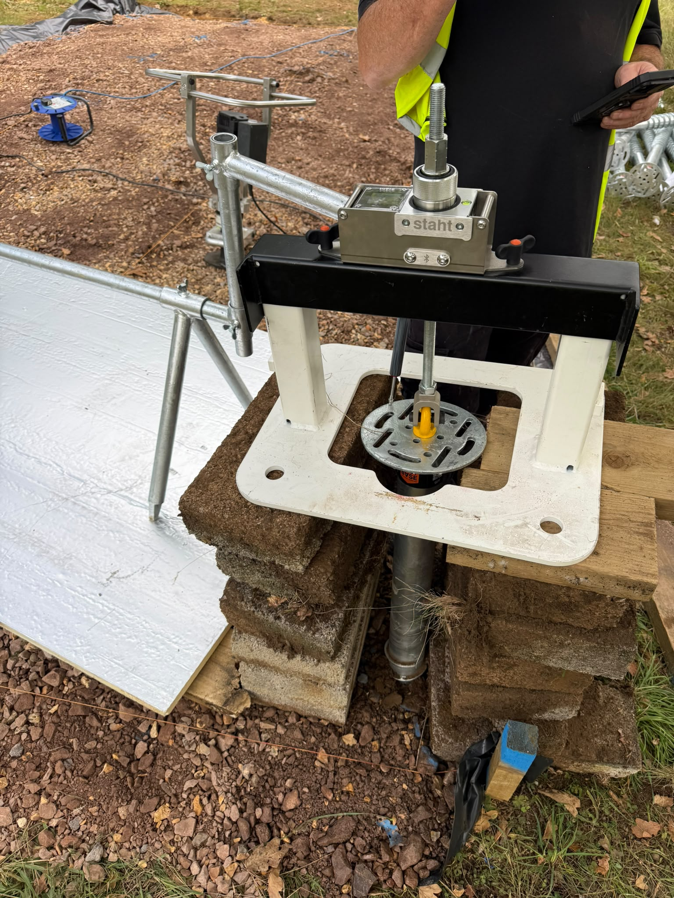
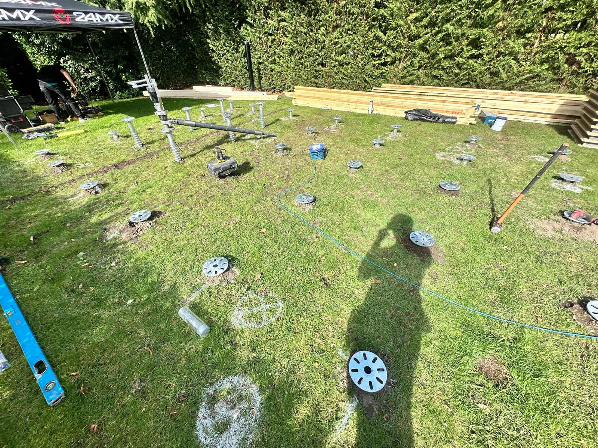

Ground Screw Load Testing
Professional ground screw pull-out testing using specialist digital equipment — with a detailed report for structural engineers and Building Control.
Professional Ground Screw Load Testing
For projects requiring Building Regulations approval, we offer specialist ground screw load testing to provide valuable information about ground conditions and foundation performance.
Using our own FIRST BASE TP60 digital testing equipment — capable of applying tensile loads of up to 60 kN (approximately 6 tonnes) — we install and test a representative ground screw by applying a controlled tensile load to measure its resistance to uplift.
The results are recorded and presented in a detailed test report, providing supporting evidence for structural engineers and Building Control.

What's Included in the Service
A complete load test, carried out on-site using specialist equipment, with full written documentation of the results.
Test Screw Installation
We install a representative ground screw at a suitable location on your site using our specialist equipment.
Controlled Tensile Testing
Using the FIRST BASE TP60, we apply a controlled tensile (pull-out) load and measure the screw's resistance to uplift forces.
Load & Displacement Recording
Applied loads are measured and recorded throughout the test. Displacement of the ground screw under load is recorded where supported by the testing setup.
Detailed Test Report
A professional written report documenting the test procedure, equipment used, results and load data — ready to submit to your structural engineer or Building Control.
Photographic Evidence
Where appropriate, photographs of the testing setup, equipment and site location are included in the report.
Standalone or Combined
Testing can be carried out at the same time as a full installation, or as a standalone site visit before foundation decisions are made.
What the Test Report Contains
Following testing, we provide a professional report that can be submitted directly to your structural engineer and Building Control as supporting evidence when assessing the ground screw foundation system.
Site address, test date and test location on site.
Screw dimensions and installation details for the tested screw.
Details of the FIRST BASE TP60 digital testing equipment used.
Description of the testing method, applied loads and the maximum tensile load achieved, recorded in kilonewtons (kN).
Recorded movement of the ground screw under load, where measured during testing.
A graphical representation of the load-displacement relationship where supported by the recorded test data.
A summary of the measured uplift resistance, together with photographs of the testing setup and location where available.
Projects That May Require Load Testing
Testing requirements vary between projects and should be confirmed with the appointed structural engineer or Building Control. The following project types commonly require load test evidence.
Garden Rooms & Home Offices
Garden rooms and offices requiring Building Regulations approval, particularly larger structures where structural sign-off is needed.
Residential Extensions
Single-storey and other residential extensions where ground screw foundations are specified and Building Control requires supporting performance data.
Timber-Framed Buildings
Timber-framed structures where the structural engineer or Building Control requires site-specific foundation performance evidence.
Larger Outbuildings & Commercial Structures
Larger domestic outbuildings and commercial structures where risk management requires documented foundation performance data.
Structural Engineer Requirements
Any project where the appointed structural engineer requires supporting foundation performance data before completing their calculations or sign-off.
Uncertain Ground Conditions
Sites with unusual, soft or variable ground conditions where actual performance data provides more confidence than general specification estimates.
How the Test Works
The process is carried out on-site and requires no specialist preparation from you.
Test Screw Installed
A ground screw is driven to the required depth at a representative location on your site using our specialist installation equipment.
Tensile Load Applied
The FIRST BASE TP60 applies a controlled tensile load, measuring the screw's resistance to uplift forces in the local ground conditions.
Results Recorded
Applied loads and displacement data are recorded digitally throughout the test procedure.
Report Provided
You receive a detailed written test report to pass to your structural engineer and Building Control as supporting evidence.
Understanding What the Test Measures
Tensile Testing — What It Tells You
The FIRST BASE TP60 performs tensile pull-out testing, which measures the resistance of a ground screw to uplift forces. This provides valuable site-specific data about ground conditions and foundation performance under tensile load.
A tensile test does not directly establish the compressive load-bearing capacity of a ground screw, and does not certify the complete foundation design. Test results should be interpreted by the project's structural engineer, and acceptance for Building Regulations purposes remains subject to the relevant approval process.
Ground Down will not suggest that load testing automatically guarantees Building Regulations compliance or approval — that determination rests with your structural engineer and Building Control.
Maximum Test Capacity
Our FIRST BASE TP60 equipment can apply up to 60 kN (approximately 6 tonnes) of tensile load — providing a meaningful test for garden rooms, residential extensions and most domestic and commercial applications.
Load Testing Costs
Fixed pricing — no hidden extras. All prices are ex VAT.
Single Representative Screw
£450 + VAT
Covers installation of the test screw, the full tensile pull-out test using the FIRST BASE TP60, and a detailed written test report.
Each Additional Screw Tested
£35 + VAT each
Where more than one test location is required — for example, to cover different areas or ground conditions across a larger site.
Travel charges apply in line with our standard rates. Get in touch for a confirmed quote including travel.

Request a Load Test Quote
Tell us about your project, your location and why you need testing. We'll come back with options and a quotation.
Or see our main supply and installation service for standard ground screw foundations.